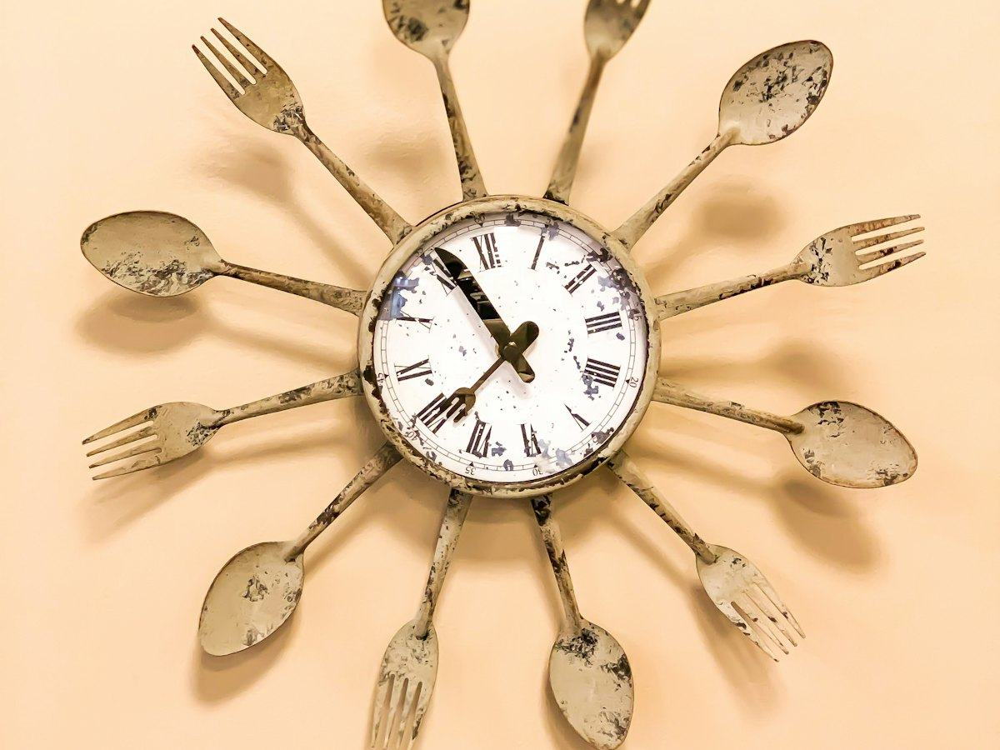

Ayuno
Qué comer al romper el ayuno: ideas sencillas y errores que conviene evitar
Cómo romper el ayuno intermitente sin darte un atracón: qué poner en el plato, ideas de comidas y cómo llevar el control con el temporizador de Pombo AI.
 Por el equipo editorial de Pombo AI
Por el equipo editorial de Pombo AI
12 nov 2026 · 7 min de lectura

El ayuno intermitente lleva años siendo una de las dietas más buscadas. Pero ¿funciona mejor que comer menos de forma convencional? Esto es lo que dicen las revisiones más sólidas, sin promesas milagro.
No existe una definición única. Según el análisis publicado en The BMJ, sus variantes se agrupan en tres grandes categorías: la alimentación con horario restringido (por ejemplo, el 16:8, con 16 horas de ayuno y 8 de comida), el ayuno en días alternos (24 horas de ayuno un día sí y otro no) y el ayuno de día completo (como el 5:2, con cinco días de comida libre y dos de ayuno).
La OCU describe la versión más extendida como pasar al menos 12 horas sin comer, aunque puede llegar a 16 o 20, permitiendo bebidas sin azúcar como agua, café o infusiones.
La revisión Cochrane, publicada en febrero de 2026, incluyó 22 estudios con 1.995 adultos con sobrepeso u obesidad, con seguimientos de hasta 12 meses. Su conclusión principal: frente al asesoramiento dietético tradicional, el ayuno intermitente podría producir poca o ninguna diferencia en el cambio de peso (21 estudios, 1.430 personas).
Frente a no hacer ninguna intervención, el ayuno probablemente cambia poco el peso, con una confianza moderada. Para el resto de resultados, la confianza es baja o muy baja por métodos poco sólidos y muestras pequeñas. Los autores también señalan que solo se evalúan efectos a corto plazo y que la viabilidad y la sostenibilidad individuales deben pesar en la decisión.
Otro trabajo de referencia, una revisión sistemática con metaanálisis en red de 99 ensayos y 6.582 adultos, concluyó que todas las estrategias de ayuno intermitente y de restricción calórica continua reducen el peso frente a comer sin restricciones. Las diferencias entre ayunar y reducir calorías fueron pequeñas. Solo el ayuno en días alternos mostró una ventaja ligera sobre la restricción calórica continua (unos 1,29 kg de diferencia), pero sin alcanzar el umbral de relevancia clínica que fijaron los investigadores.
El mismo trabajo no encontró beneficio sobre el azúcar en sangre ni sobre el colesterol "bueno" en ninguna comparación, y los propios autores piden estudios más largos.
La OCU recoge estudios en los que se pierden entre 5 y 10 kg en un periodo de 3 a 12 meses, con una media de unos 7 kg, y recuerda que seguir un ayuno o una dieta de restricción calórica convencional no marcaría una gran diferencia. También menciona posibles mejoras en resistencia a la insulina, glucosa, grasa visceral, colesterol LDL y triglicéridos, y recomienda hacerlo con la supervisión de un dietista-nutricionista.
La propia OCU advierte de que el ayuno no está libre de riesgos y de que un estudio observacional presentado en 2024 asoció el ayuno con más muertes cardiovasculares, aunque no estaba publicado y fue criticado metodológicamente. La conclusión honesta es que aún no hay certeza sobre su efecto a largo plazo en el corazón.
Si decides probarlo, mira también qué comer al romper el ayuno.
Controla tu ayuno con Pombo AI
El temporizador de ayuno del app tiene planes 14:10, 16:8, 18:6 y 20:4, o uno personalizado de 1 a 48 horas. Te avisa al terminar, guarda tu historial y puedes exportarlo en PDF o CSV. Cuando rompas el ayuno, haz una foto a tu plato para registrar calorías y macros.
Según la revisión Cochrane de 2026, con 22 estudios y 1.995 adultos con sobrepeso u obesidad, el ayuno intermitente podría producir poca o ninguna diferencia de peso frente al asesoramiento dietético tradicional. La certeza de la evidencia es baja o muy baja en la mayoría de resultados.
La revisión Cochrane menciona como posibles efectos el cansancio, los dolores de cabeza y las náuseas, aunque indica que no hay certeza sobre los eventos adversos.
Aviso: Este artículo es informativo y no sustituye el consejo de un médico o dietista-nutricionista. Si tienes una enfermedad, tomas medicación, estás embarazada o has tenido un trastorno de la conducta alimentaria, consulta con un profesional antes de cambiar tu alimentación.
Cómo romper el ayuno intermitente sin darte un atracón: qué poner en el plato, ideas de comidas y cómo llevar el control con el temporizador de Pombo AI.
Comparamos los métodos de ayuno intermitente más conocidos: cómo funcionan, qué dice el BMJ de cada uno y cómo elegir el que puedas mantener.
Qué beneficios cardiometabólicos se han estudiado, qué efectos adversos se mencionan y qué precauciones tomar antes de empezar un ayuno intermitente.